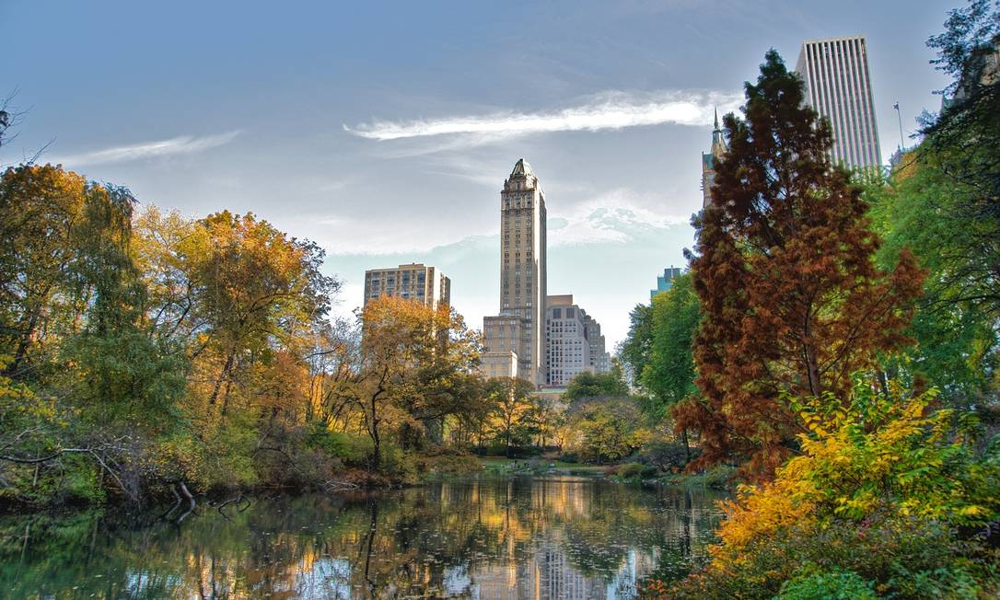

Nova York, conhecida como a "Grande Maçã", é uma das cidades mais icônicas e vibrantes do mundo. Famosa por seus arranha-céus impressionantes, como o Empire State Building e o One World Trade Center, a cidade é um centro global de cultura, arte e negócios. Os visitantes podem explorar atrações mundialmente conhecidas, como a Estátua da Liberdade, Central Park, Times Square e os museus de classe mundial do Museum Mile. Nova York é também um caldeirão de culturas, oferecendo uma diversidade de experiências gastronômicas, artísticas e de entretenimento que refletem sua rica história e população multicultural.
Na imagem acima, vemos o icônico skyline de Nova York, marcado por seus famosos arranha-céus que simbolizam a grandiosidade e a energia da cidade.

Na imagem acima, podemos ver Central Park, um oásis verde no coração da cidade, oferecendo um refúgio da agitação urbana.

Na imagem acima, podemos ver Times Square, um dos locais mais emblemáticos de Nova York, conhecido por suas luzes brilhantes e pela agitação constante.
Assim como Rio de Janeiro, Lisboa também é conhecida por sua arte e cultura.
Quer saber mais sobre Nova York? Clique aqui